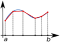

Original file (2,610 × 1,902 pixels, file size: 113 KB, MIME type: image/png )
Public domain Public domain false false
I, the copyright holder of this work, release this work into the public domain In some countries this may not be legally possible; if so: I grant anyone the right to use this work for any purpose , without any conditions, unless such conditions are required by law.
English Add a one-line explanation of what this file represents
creator<\/a>"}},"text\/plain":{"en":{"":"creator"}}},"{\"value\":{\"entity-type\":\"property\",\"numeric-id\":2093,\"id\":\"P2093\"},\"type\":\"wikibase-entityid\"}":{"text\/html":{"en":{"":"
author name string<\/a>"}},"text\/plain":{"en":{"":"author name string"}}},"{\"value\":\"Oleg Alexandrov\",\"type\":\"string\"}":{"text\/html":{"en":{"P2093":"Oleg Alexandrov","P4174":" Oleg Alexandrov<\/a>"}},"text\/plain":{"en":{"P2093":"Oleg Alexandrov","P4174":"Oleg Alexandrov"}}},"{\"value\":{\"entity-type\":\"property\",\"numeric-id\":4174,\"id\":\"P4174\"},\"type\":\"wikibase-entityid\"}":{"text\/html":{"en":{"":" Wikimedia username<\/a>"}},"text\/plain":{"en":{"":"Wikimedia username"}}},"{\"value\":{\"entity-type\":\"property\",\"numeric-id\":2699,\"id\":\"P2699\"},\"type\":\"wikibase-entityid\"}":{"text\/html":{"en":{"":" URL<\/a>"}},"text\/plain":{"en":{"":"URL"}}},"{\"value\":\"http:\\\/\\\/commons.wikimedia.org\\\/wiki\\\/User:Oleg_Alexandrov\",\"type\":\"string\"}":{"text\/html":{"en":{"P2699":" http:\/\/commons.wikimedia.org\/wiki\/User:Oleg_Alexandrov<\/a>"}},"text\/plain":{"en":{"P2699":"http:\/\/commons.wikimedia.org\/wiki\/User:Oleg_Alexandrov"}}}}" class="wbmi-entityview-statementsGroup wbmi-entityview-statementsGroup-P170 oo-ui-layout oo-ui-panelLayout oo-ui-panelLayout-framed"> media type<\/a>"}},"text\/plain":{"en":{"":"media type"}}},"{\"value\":\"image\\\/png\",\"type\":\"string\"}":{"text\/html":{"en":{"P1163":"image\/png"}},"text\/plain":{"en":{"P1163":"image\/png"}}}}" class="wbmi-entityview-statementsGroup wbmi-entityview-statementsGroup-P1163 oo-ui-layout oo-ui-panelLayout oo-ui-panelLayout-framed">
checksum<\/a>"}},"text\/plain":{"en":{"":"checksum"}}},"{\"value\":\"d9056029a652c4f4b534ea3d4e61b7effce6e19e\",\"type\":\"string\"}":{"text\/html":{"en":{"P4092":"d9056029a652c4f4b534ea3d4e61b7effce6e19e"}},"text\/plain":{"en":{"P4092":"d9056029a652c4f4b534ea3d4e61b7effce6e19e"}}},"{\"value\":{\"entity-type\":\"property\",\"numeric-id\":459,\"id\":\"P459\"},\"type\":\"wikibase-entityid\"}":{"text\/html":{"en":{"":"
determination method or standard<\/a>"}},"text\/plain":{"en":{"":"determination method or standard"}}},"{\"value\":{\"entity-type\":\"item\",\"numeric-id\":13414952,\"id\":\"Q13414952\"},\"type\":\"wikibase-entityid\"}":{"text\/html":{"en":{"P459":" SHA-1<\/a>"}},"text\/plain":{"en":{"P459":"SHA-1"}}}}" class="wbmi-entityview-statementsGroup wbmi-entityview-statementsGroup-P4092 oo-ui-layout oo-ui-panelLayout oo-ui-panelLayout-framed"> data size<\/a>"}},"text\/plain":{"en":{"":"data size"}}},"{\"value\":{\"amount\":\"+115276\",\"unit\":\"http:\\\/\\\/www.wikidata.org\\\/entity\\\/Q8799\"},\"type\":\"quantity\"}":{"text\/html":{"en":{"P3575":"115,276
byte<\/span>"}},"text\/plain":{"en":{"P3575":"115,276 byte"}}}}" class="wbmi-entityview-statementsGroup wbmi-entityview-statementsGroup-P3575 oo-ui-layout oo-ui-panelLayout oo-ui-panelLayout-framed"> height<\/a>"}},"text\/plain":{"en":{"":"height"}}},"{\"value\":{\"amount\":\"+1902\",\"unit\":\"http:\\\/\\\/www.wikidata.org\\\/entity\\\/Q355198\"},\"type\":\"quantity\"}":{"text\/html":{"en":{"P2048":"1,902
pixel<\/span>"}},"text\/plain":{"en":{"P2048":"1,902 pixel"}}}}" class="wbmi-entityview-statementsGroup wbmi-entityview-statementsGroup-P2048 oo-ui-layout oo-ui-panelLayout oo-ui-panelLayout-framed"> width<\/a>"}},"text\/plain":{"en":{"":"width"}}},"{\"value\":{\"amount\":\"+2610\",\"unit\":\"http:\\\/\\\/www.wikidata.org\\\/entity\\\/Q355198\"},\"type\":\"quantity\"}":{"text\/html":{"en":{"P2049":"2,610
pixel<\/span>"}},"text\/plain":{"en":{"P2049":"2,610 pixel"}}}}" class="wbmi-entityview-statementsGroup wbmi-entityview-statementsGroup-P2049 oo-ui-layout oo-ui-panelLayout oo-ui-panelLayout-framed"> File history
Click on a date/time to view the file as it appeared at that time.
Date/Time Thumbnail Dimensions User Comment current 22:47, 29 April 2007 
2,610 × 1,902 (113 KB) Oleg Alexandrov {{Information |Description= |Source= |Date= |Author= }} 16:37, 29 April 2007 2,610 × 1,902 (106 KB) Oleg Alexandrov {{Information |Description= |Source= |Date= |Author= }} {{PD-self}} 16:33, 29 April 2007 2,537 × 1,883 (105 KB) Oleg Alexandrov {{Information |Description= |Source= |Date= |Author= }} {{PD-self}} 16:32, 29 April 2007 2,537 × 1,883 (105 KB) Oleg Alexandrov {{Information |Description= |Source= |Date= |Author= }} {{PD-self}} 16:23, 29 April 2007 2,610 × 1,902 (104 KB) Oleg Alexandrov {{Information |Description=Made with Inkscape |Source=self-made |Date= |Author= User:Oleg Alexandrov }} {{PD-self}} Category:Numerical analysis
File usage
The following 2 pages use this file:
Global file usage
The following other wikis use this file:
Usage on ar.wikipedia.org
Usage on ca.wikipedia.org
Usage on en.wikibooks.org
Usage on en.wikiversity.org
Usage on fa.wikipedia.org
Usage on hu.wikipedia.org
Usage on hy.wikipedia.org
Usage on ja.wikipedia.org
Usage on lt.wikipedia.org
Usage on mk.wikipedia.org
Usage on ru.wikipedia.org
Usage on sh.wikipedia.org
Usage on sl.wikipedia.org
Usage on sr.wikipedia.org
Usage on zh.wikipedia.org
{kind=link}
{kind=link}
{kind=link}
{kind=link}
{kind=link}
{kind=link}
{kind=link}
{kind=link}